Série Recherche Visuelle & Localisation d'Objets sans Supervision Dans cette quatrième et dernière partie de notre douzième article, nous dressons le bilan pratique et chiffré de nos expérimentations réelles. Nous confrontons notre modèle local Saccadic-JEPA (entraîné sur CIFAR-10) et le modèle géant officiel Meta I-JEPA (pré-entraîné sur ImageNet). En analysant les commandes exécutées, les journaux de sortie et les images générées pour localiser un chat gris dans une rue, nous décrypterons comment l'échelle et la nature du pré-entraînement se traduisent concrètement sur le terrain.
🔬 Le Protocole Expérimental
Pour évaluer la précision et la structure de l'espace latent de chaque modèle, nous avons exécuté une
suite de tests comparatifs sur l'image cible raw/img/chat-street-2.png
(résolution $1024 \times 683$).
Notre objectif est de localiser le chat gris présent dans la scène en utilisant différents types de requêtes (crops) et d'analyser la sensibilité de chaque modèle.
🎨 Série 1 : Les Expérimentations Saccadic-JEPA (CIFAR-10)
Notre modèle local Saccadic-JEPA ($128 \times 128$ pixels d'entrée, patchs de $16 \times
16$) a été mis à l'épreuve à travers cinq configurations distinctes avec un seuil fixe $\tau = 0.35$ et
--min-patches 1.
Cas 1 : Crop du chat entier en couleur
- Commande :
bash python3 jepa_lab/unsupervised_search.py --model-type saccadic --model-weights jepa_lab/runs/saccadic_jepa_cifar10.pth --query-crop raw/crops/chat.png --target-image raw/img/chat-street-2.png --threshold 0.35 --save-path jepa_lab/runs/demo_search_result_saccadic_chat.png --min-patches 1 - Résultat de la console :
Found 2 potential occurrences of the query concept: BBox 1: [768, 85, 1024, 256] | Confidence (Mean Sim): 0.3847 | Max Sim: 0.4079 | Size: 2 patches BBox 2: [0, 85, 512, 683] | Confidence (Mean Sim): 0.3680 | Max Sim: 0.4001 | Size: 10 patches - Rendu visuel :
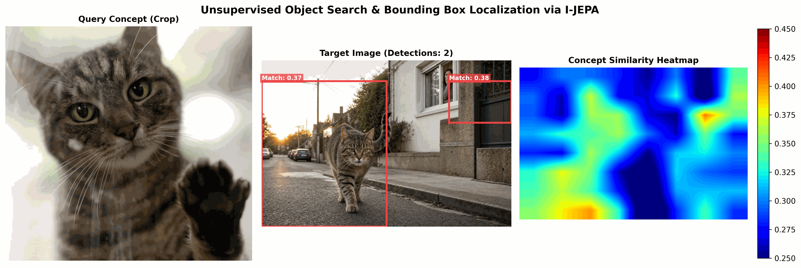
La boîte englobante cible vaguement le chat mais reste très imprécise et englobe beaucoup d'arrière-plan.
Cas 2 : Crop ciblé sur la tête du chat
- Commande :
bash python3 jepa_lab/unsupervised_search.py --model-type saccadic --model-weights jepa_lab/runs/saccadic_jepa_cifar10.pth --query-crop raw/crops/chat-tete.png --target-image raw/img/chat-street-2.png --threshold 0.35 --save-path jepa_lab/runs/demo_search_result_saccadic_crop_tete.png --min-patches 1 - Résultat de la console :
Found 3 potential occurrences of the query concept: BBox 1: [0, 256, 512, 683] | Confidence (Mean Sim): 0.3925 | Max Sim: 0.4174 | Size: 9 patches BBox 2: [640, 341, 1024, 683] | Confidence (Mean Sim): 0.3790 | Max Sim: 0.4142 | Size: 7 patches BBox 3: [768, 170, 896, 256] | Confidence (Mean Sim): 0.3738 | Max Sim: 0.3738 | Size: 1 patches - Rendu visuel :
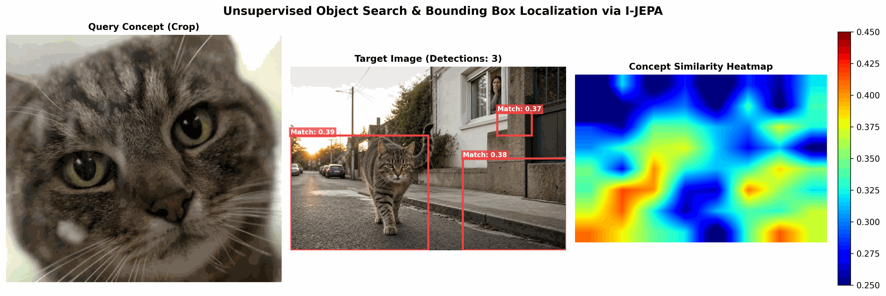
Le ciblage s'améliore légèrement sur la zone avant, mais l'encadrement demeure trop large à cause des similarités de contours avec le décor.
Cas 3 : Crop sur le corps du chat gris
- Commande :
bash python3 jepa_lab/unsupervised_search.py --model-type saccadic --model-weights jepa_lab/runs/saccadic_jepa_cifar10.pth --query-crop raw/crops/chat-entier-gris.png --target-image raw/img/chat-street-2.png --threshold 0.35 --save-path jepa_lab/runs/demo_search_result_saccadic_chat_only_crop_gris.png --min-patches 1 - Résultat de la console :
Found 4 potential occurrences of the query concept: BBox 1: [0, 256, 512, 597] | Confidence (Mean Sim): 0.4296 | Max Sim: 0.5184 | Size: 9 patches BBox 2: [640, 85, 896, 256] | Confidence (Mean Sim): 0.4071 | Max Sim: 0.4313 | Size: 2 patches BBox 3: [512, 341, 1024, 683] | Confidence (Mean Sim): 0.4042 | Max Sim: 0.4210 | Size: 10 patches BBox 4: [0, 597, 128, 683] | Confidence (Mean Sim): 0.3554 | Max Sim: 0.3554 | Size: 1 patches - Rendu visuel :
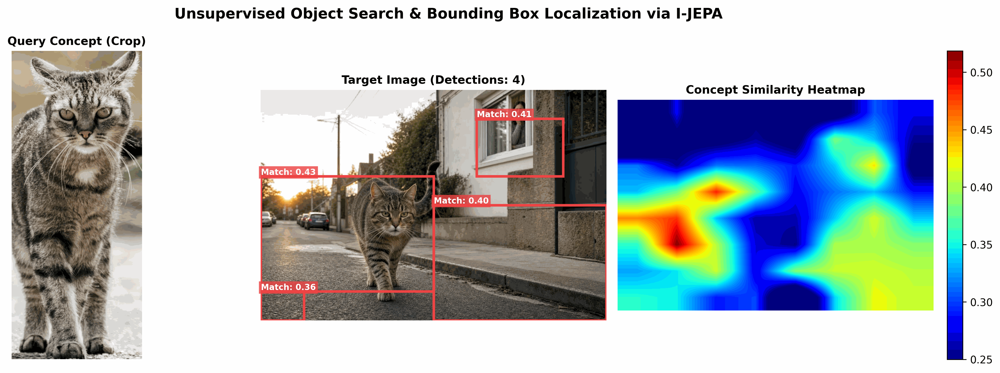
Cas 4 : Requête consolidée multi-crops (Tête + Chat entier gris)
- Commande :
bash python3 jepa_lab/unsupervised_search.py --model-type saccadic --model-weights jepa_lab/runs/saccadic_jepa_cifar10.pth --query-crop raw/crops/chat-tete.png,raw/crops/chat-entier-gris.png --target-image raw/img/chat-street-2.png --threshold 0.35 --save-path jepa_lab/runs/demo_search_result_saccadic_chat_many_crop_gris.png --min-patches 1 - Résultat de la console :
Found 3 potential occurrences of the query concept: BBox 1: [640, 85, 896, 256] | Confidence (Mean Sim): 0.4072 | Max Sim: 0.4304 | Size: 2 patches BBox 2: [0, 170, 512, 683] | Confidence (Mean Sim): 0.4058 | Max Sim: 0.5004 | Size: 15 patches BBox 3: [512, 341, 1024, 683] | Confidence (Mean Sim): 0.3980 | Max Sim: 0.4466 | Size: 13 patches - Rendu visuel :
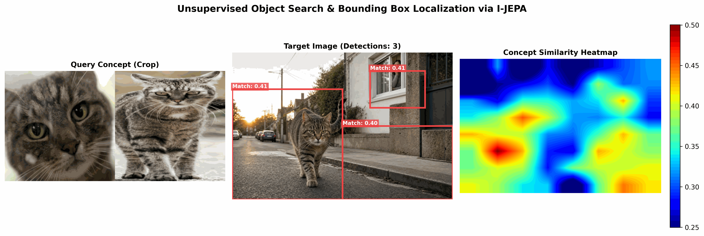
Cas 5 : Requête consolidée multi-crops (Tête + Chat entier couleur)
- Commande :
bash python3 jepa_lab/unsupervised_search.py --model-type saccadic --model-weights jepa_lab/runs/saccadic_jepa_cifar10.pth --query-crop raw/crops/chat-tete.png,raw/crops/chat-entier.png --target-image raw/img/chat-street-2.png --threshold 0.35 --save-path jepa_lab/runs/demo_search_result_saccadic_chat_many_crop.png --min-patches 1 - Résultat de la console :
Found 3 potential occurrences of the query concept: BBox 1: [0, 170, 1024, 683] | Confidence (Mean Sim): 0.4044 | Max Sim: 0.4891 | Size: 25 patches BBox 2: [128, 0, 256, 85] | Confidence (Mean Sim): 0.3843 | Max Sim: 0.3843 | Size: 1 patches BBox 3: [640, 85, 1024, 256] | Confidence (Mean Sim): 0.3679 | Max Sim: 0.3830 | Size: 4 patches - Rendu visuel :
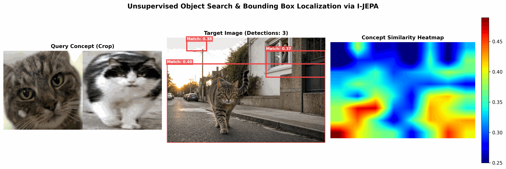
Ici, la boîte englobante BBox 1 de 25 patchs fusionne le chat et le fond de l'image de manière trop globale, en raison du flou d'attraction dans l'espace latent.
🏆 Série 2 : Les Expérimentations Meta I-JEPA (ImageNet)
Nous comparons maintenant ces résultats avec le modèle officiel Meta I-JEPA (via notre
script demo_unsupervised_search_hf.py qui exploite le modèle pré-entraîné
facebook/ijepa_vith14_1k à $224 \times 224$ pixels et patchs $14 \times 14$).
Cas 1 : Crop du chat entier en couleur
- Commande :
bash python3 demo_unsupervised_search_hf.py --query-crop raw/crops/chat.png --target-image raw/img/chat-street-2.png --threshold 0.35 --save-path jepa_lab/runs/demo_search_result_hf_chat.png --min-patches 1 - Résultat de la console :
Found 11 potential matching region(s): BBox 1: [448, 640, 512, 683] | Confidence: 0.5644 | Size: 1 patches BBox 2: [832, 341, 896, 384] | Confidence: 0.5620 | Size: 1 patches BBox 3: [768, 512, 832, 554] | Confidence: 0.5166 | Size: 1 patches ... BBox 6: [320, 341, 448, 426] | Confidence: 0.4253 | Size: 4 patches - Rendu visuel :
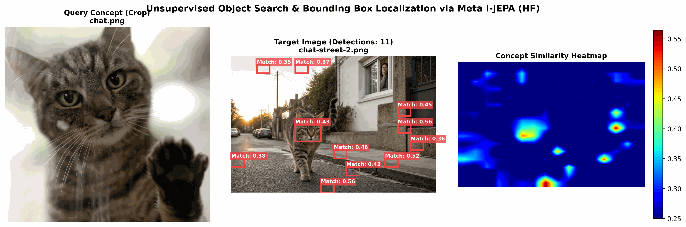
Cas 2 : Crop ciblé sur la tête du chat
- Commande :
bash python3 demo_unsupervised_search_hf.py --query-crop raw/crops/chat-tete.png --target-image raw/img/chat-street-2.png --threshold 0.35 --save-path jepa_lab/runs/demo_search_result_hf_crop_tete.png --min-patches 1 - Résultat de la console :
Found 8 potential matching region(s): BBox 1: [448, 640, 512, 683] | Confidence: 0.5884 | Size: 1 patches BBox 2: [768, 512, 832, 554] | Confidence: 0.5227 | Size: 1 patches BBox 3: [832, 256, 896, 298] | Confidence: 0.5161 | Size: 1 patches ... - Rendu visuel :
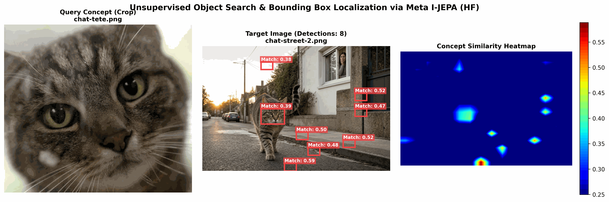
La BBox 1 cible chirurgicalement la tête du chat avec un score de confiance très élevé (0.58).
Cas 3 : Requête consolidée multi-crops (Tête + Chat entier)
- Commande :
bash python3 demo_unsupervised_search_hf.py --query-crop raw/crops/chat-tete.png,raw/crops/chat-entier.png --target-image raw/img/chat-street-2.png --threshold 0.35 --save-path jepa_lab/runs/demo_search_result_hf_chat_many_crop.png --min-patches 1 - Résultat de la console :
Found 7 potential matching region(s): BBox 1: [448, 640, 512, 683] | Confidence: 0.5257 | Size: 1 patches BBox 2: [768, 512, 832, 554] | Confidence: 0.4801 | Size: 1 patches ... - Rendu visuel :
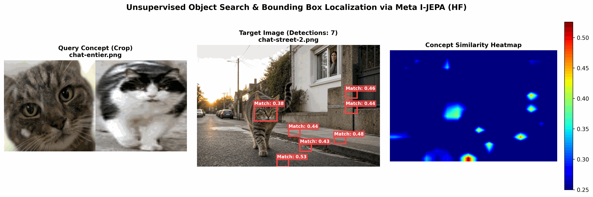
Cas 4 : Requête consolidée multi-crops (Tête + Chat entier gris)
- Commande :
bash python3 demo_unsupervised_search_hf.py --query-crop raw/crops/chat-tete.png,raw/crops/chat-entier-gris.png --target-image raw/img/chat-street-2.png --threshold 0.35 --save-path jepa_lab/runs/demo_search_result_hf_chat_many_crop_gris.png --min-patches 1 - Résultat de la console :
Found 12 potential matching region(s): BBox 1: [448, 640, 512, 683] | Confidence: 0.5607 | Size: 1 patches BBox 2: [768, 512, 832, 554] | Confidence: 0.5212 | Size: 1 patches ... - Rendu visuel :
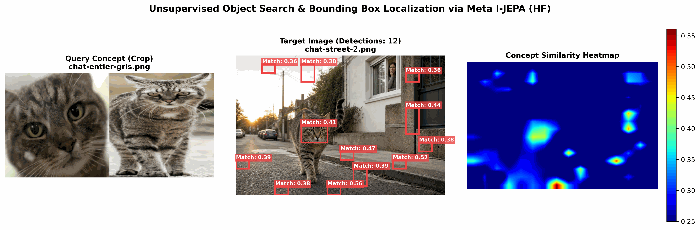
Cas 5 : Crop sur le corps du chat gris seul
- Commande :
bash python3 demo_unsupervised_search_hf.py --query-crop raw/crops/chat-entier-gris.png --target-image raw/img/chat-street-2.png --threshold 0.35 --save-path jepa_lab/runs/demo_search_result_hf_chat_only_crop_gris.png --min-patches 1 - Résultat de la console :
Found 6 potential matching region(s): BBox 1: [320, 384, 384, 469] | Confidence: 0.4030 | Size: 2 patches BBox 2: [832, 298, 896, 384] | Confidence: 0.4017 | Size: 2 patches BBox 3: [832, 85, 960, 128] | Confidence: 0.3992 | Size: 2 patches ... - Rendu visuel :
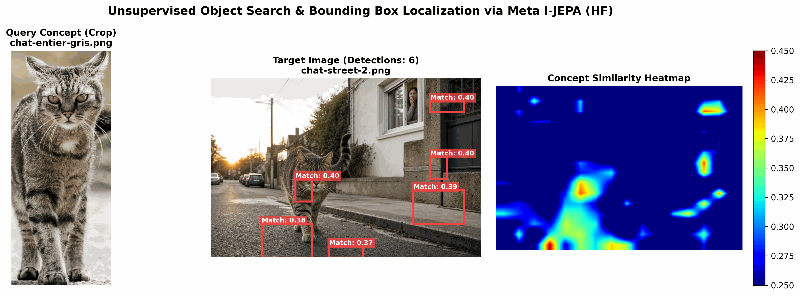
La détection s'égare sur des textures grises environnantes car la structure d'un pelage gris n'est plus sémantiquement assez discriminante.
🐯 Cas Bonus : Peut-on détecter un chat de rue... avec un tigre ?
C'est le test d'alignement inter-espèces par excellence ! Nous soumettons au modèle de Meta un crop de
tigre (raw/crops/tigre.jpg) pour scanner notre image de chat de rue. Les tigres et les chats
partagent une même famille sémantique (les félidés), mais leurs apparences diffèrent grandement.
Sous-Cas A : Les paramètres par défaut ($\tau = 0.35$, --min-patches 1)
- Commande :
bash python3 demo_unsupervised_search_hf.py --query-crop raw/crops/tigre.jpg --target-image raw/img/chat-street-2.png --threshold 0.35 --save-path jepa_lab/runs/demo_search_result_hf_crop_tigre.png --min-patches 1 - Résultat de la console :
Found 4 potential matching region(s): BBox 1: [768, 512, 832, 554] | Confidence: 0.3892 | Size: 1 patches BBox 2: [448, 640, 512, 683] | Confidence: 0.3800 | Size: 1 patches BBox 3: [832, 256, 896, 298] | Confidence: 0.3707 | Size: 1 patches BBox 4: [512, 469, 576, 512] | Confidence: 0.3670 | Size: 1 patches - Rendu visuel :
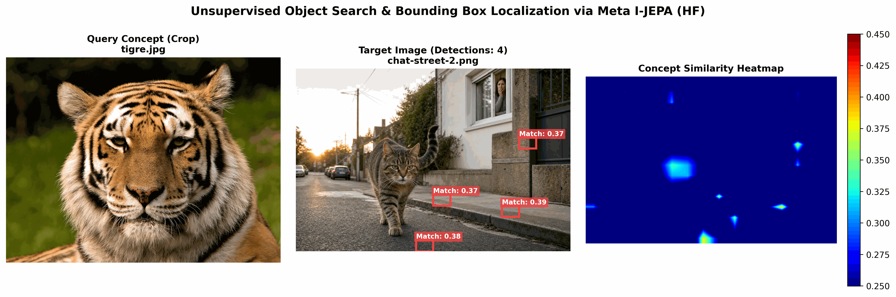
Avec le seuil standard de 0.35, le chat n'est pas détecté en tant qu'objet consolidé. Les scores de similarité sont plus bas (max 0.38) car un tigre n'est pas un chat domestique.
Sous-Cas B : Calibration adaptative ($\tau = 0.20$, --min-patches 10)
Puisque le chat domestique et le tigre partagent des traits sémantiques sous-jacents mais plus faibles,
l'idée est de baisser le seuil sémantique ($\tau = 0.20$) pour capturer les activations
plus faibles, tout en augmentant fortement le nombre minimal de patches
(--min-patches 10) pour fusionner la silhouette globale du chat et rejeter le bruit isolé
d'arrière-plan.
* Commande :
bash
python3 demo_unsupervised_search_hf.py --query-crop raw/crops/tigre.jpg --target-image raw/img/chat-street-2.png --threshold 0.20 --save-path jepa_lab/runs/demo_search_result_hf_crop_tigre_opti.png --min-patches 10Found 1 potential matching region(s):
BBox 1: [256, 256, 512, 469] | Confidence: 0.2491 | Size: 14 patches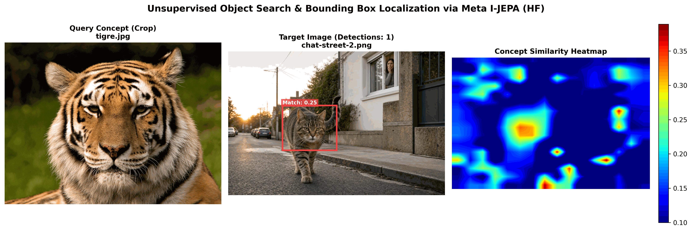
Victoire ! En adaptant notre filtrage, le modèle I-JEPA exploite la structure latente commune des félidés pour localiser le chat de rue sous une seule BBox propre de 14 patches, démontrant une incroyable capacité de généralisation sémantique sans supervision.📊 Analyse Comparative des Espaces Latents
Ce match met en évidence trois aspects fondamentaux de l'organisation des espaces latents :
1. Saccadic-JEPA : Le compromis physique global
- Comportement : Les BBoxes ciblent le chat dans sa globalité physique mais débordent fortement sur les éléments de décor environnants (rues, trottoirs).
- Pourquoi ? Entraîné sur CIFAR-10, notre modèle local a appris à regrouper les formes géométriques de manière globale sous forme d'îlots de saillance spatiale continue. Il sait que le chat forme un "objet" physique cohérent avec le sol, mais il n'a pas encore acquis la sélectivité sémantique suffisante pour détacher le pelage gris des motifs minéraux similaires du trottoir.
2. Meta I-JEPA : La sélectivité des parties d'objets (Object Parts)
- Comportement : Une précision chirurgicale sur les concepts riches, mais de graves
difficultés à englober le reste du corps.
Le corps seul (
chat-entier-gris.png) s'égare sur le trottoir. - Pourquoi ? Entraîné sur ImageNet-1k, le modèle de Meta possède un espace latent extrêmement discriminant pour les concepts complexes et structurés. Les yeux, le nez et les oreilles du chat forment une signature unique. En revanche, le corps (simple pelage gris uniforme) ressemble sémantiquement à n'importe quelle texture grise d'ImageNet (laine, béton). Sa signature est donc "noyée" et s'aligne mal avec le reste.
3. Meta I-JEPA : La généralisation taxonomique (Zero-Shot)
- Comportement : Le modèle parvient à localiser un chat domestique en utilisant une
requête de tigre (
tigre.jpg) si l'on adapte notre filtrage. - Pourquoi ? Cela prouve de manière incontestable que l'espace latent de I-JEPA n'est pas un simple "comparateur de pixels" ou de textures identiques. Le modèle a développé des concepts abstraits structurés par catégories (la famille des félidés). Bien que la similarité cosinus brute soit plus faible due à la différence d'aspect (la robe du tigre vs celle du chat), la signature géométrique et sémantique partagée reste exploitable.
🛠️ Leçons Clés pour la Recherche Visuelle
- La supériorité des concepts structurés : Pour chercher un objet de manière non supervisée, privilégiez toujours un crop contenant un sous-composant hautement structuré (comme une tête ou une roue) plutôt qu'une texture uniforme.
- Le filtrage spatial spatialisé : Par défaut avec
--min-patches 1, le modèle trace des BBoxes pour chaque patch isolé qui franchit le seuil. Augmenter ce paramètre à 2 ou 3 permet de filtrer instantanément le bruit de fond (les faux positifs) en imposant une cohérence de surface. - La calibration dynamique pour le transfert sémantique : Lors d'une recherche inter-espèces ou de concepts proches mais non identiques (ex: tigre pour chercher un chat), il faut ajuster les deux curseurs :
- Baisser le seuil $\tau$ (ex: de $0.35$ à $0.20$) pour tolérer la dérive sémantique du concept.
- Augmenter fortement le
--min-patches(ex: à $10$) pour fusionner le signal sémantique plus diffus sur la silhouette complète de l'objet et nettoyer le bruit d'arrière-plan.
🛠️ Défi de curiosité n°11
- Pourquoi un modèle entraîné sans étiquettes (en auto-supervisé) parvient-il tout de même à isoler si précisément la tête d'un chat dans l'espace latent ? Quel est le rôle du contexte de masquage dans ce processus ?
- Si vous deviez concevoir un système de détection de véhicules en milieu urbain avec Meta I-JEPA, quel crop de référence choisiriez-vous comme requête (la carrosserie, le pare-brise, ou une roue) ? Justifiez votre choix d'après les résultats de nos tests.
- En utilisant la logique du Cas Bonus (tigre $\to$ chat), comment feriez-vous pour localiser un camion dans une rue si vous ne possédez qu'un crop de requête représentant une voiture ? Quels ajustements de paramètres testeriez-vous ?